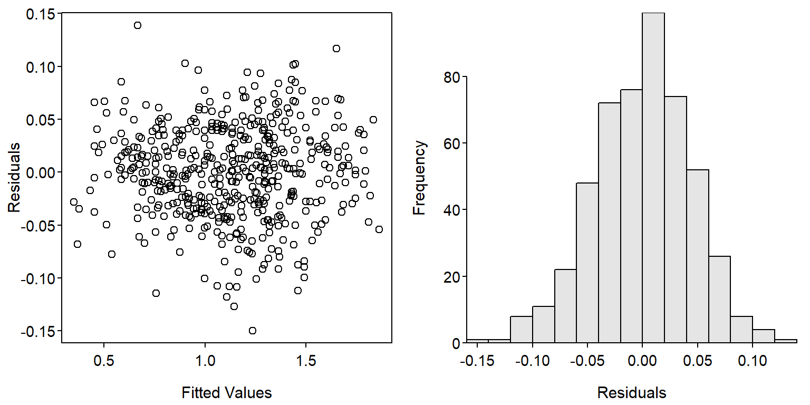
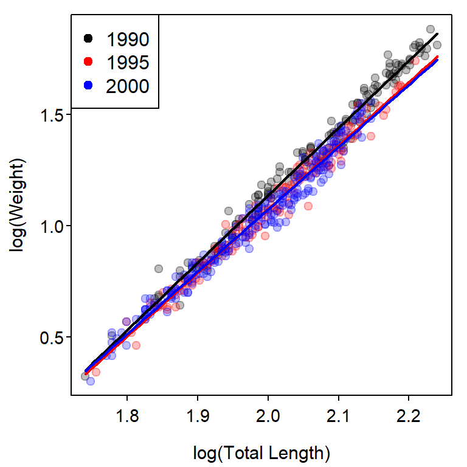
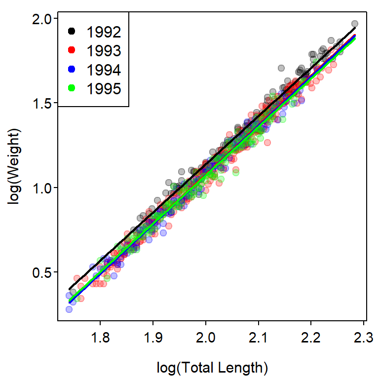

library(FSA) # for headtail(), hist(), col2rgbt()
library(dplyr) # for select(), mutate(), filter()
library(emmeans) # for emtrends(), emmeans()Weight-Length Relationship for 3+ Groups
Dummy variable regression (DVR) was introduced in Chapter 7 of Ogle (2016) in the context of determining if the slope and y-intercept parameters of weight-length relationship regressions differed between fish captured in two different years. That analysis may be extended to more than two groups, though more dummy variables are required and special methods are needed to determine which pairs of groups (if any) differ. This supplement demonstrates how to extend the DVR to more than two groups.
Setup
Packages
Functions used in this supplement require the following packages. Also note that one function from lubridate and two functions from car are used below with :: so that the whole packages do not need to be loaded.
Data
Weights (g) and total lengths (mm) from Ruffe (Gymnocephalus cernuus) captured in the St. Louis River Harbor (Minnesota and Wisconsin) were used in Chapter 7 of Ogle (2016) and will also be used in this supplement. These data are from Ogle and Winfield (2009) and are in RuffeSLRH.csv). To eliminate within-season variability, only Ruffe captured in July are used here. Additionally, a factored version of year was created, the common logarithms of weight and length were created, and the fishID, month, and day variables were removed to save space in the output.
ruf <- read.csv("../scripts/RuffeSLRH.csv") |>
filter(month==7) |>
mutate(fYear=factor(year),logW=log10(wt),logL=log10(tl)) |>
select(-fishID,-month,-day)
headtail(ruf)#R| year tl wt fYear logW logL
#R| 1 1988 78 6.0 1988 0.7781513 1.892095
#R| 2 1988 81 7.0 1988 0.8450980 1.908485
#R| 3 1988 82 7.0 1988 0.8450980 1.913814
#R| 1936 2004 137 28.0 2004 1.4471580 2.136721
#R| 1937 2004 143 31.4 2004 1.4969296 2.155336
#R| 1938 2004 174 82.4 2004 1.9159272 2.240549For the first example below, only fish from 1990, 1995, and 2000 were examined. In the second example below, fish from 1992 to 1995 were examined.
ruf1 <- ruf |>
filter(year %in% c(1990,1995,2000)) |>
droplevels()
ruf2 <- ruf |>
filter(year %in% 1992:1995) |>
droplevels()Full Model
The number of dummy variables required to represent \(k\) groups is \(k-1\). Thus, in Chapter 7 of Ogle (2016), only one dummy variable was required to represent the two groups. In this example, three groups (the years) are being examined and, thus, two dummy variables are needed. For example, lm() will ultimately treat the “1990” group as the reference group and create two dummy variables as follows
\[ fYear1995 = \left\{\begin{array}{l} 1 \text{, if captured in 1995 }\\ 0 \text{, if NOT captured in 1995 } \end{array} \right. \]
\[ fYear2000 = \left\{\begin{array}{l} 1 \text{, if captured in 2000 }\\ 0 \text{, if NOT captured in 2000 } \end{array} \right. \]
These dummy variables are each combined with the \(log_{10}(L)\) covariate to construct the following ultimate full model
\[ \begin{split} log_{10}(W_{i}) &= log_{10}(\alpha) + \beta log_{10}(L_{i}) \\ &\mspace{16mu}+ \delta_{1} fYear1995 + \delta_{2} fYear2000 \\ &\mspace{16mu}+ \gamma_{1} fYear1995*log_{10}(L_{i})+ \gamma_{2} fYear2000*log_{10}(L_{i}) + \epsilon_{i} \end{split} \tag{1}\]
Substitution of appropriate values for the dummy variables into Equation 1 shows how Equation 1 simultaneously represents the weight-length relationship regressions for all three years as shown below.
| Year | fYear1995 | fYear2000 | Submodel (\(log_{10}(W_{i})=\)) |
|---|---|---|---|
| 1990 | 0 | 0 | \(log_{10}(\alpha) + \beta log_{10}(L_{i})\) |
| 1995 | 1 | 0 | \((log_{10}(\alpha) + \delta_{1}) + (\beta + \gamma_{1})*log_{10}(L_{i})\) |
| 2000 | 0 | 1 | \((log_{10}(\alpha) + \delta_{2}) + (\beta + \gamma_{2})*log_{10}(L_{i})\) |
From these submodels, it is apparent that \(\alpha\) is the y-intercept for the reference (e.g., 1990) group, \(\beta\) is the slope for the reference group, \(\delta_{i}\) is the difference in y-intercepts between the \(i\)th and reference groups, and \(\gamma_{i}\) is the difference in slopes between the \(i\)th and reference groups. By extension, the interaction variables measure differences in slopes and the dummy variables measure differences in y-intercepts.
The model in Equation 1 is fit with lm() using a formula of the form y~x*factor exactly as described in Chapter 7 of Ogle (2016) (again noting that lm() will create the appropriate dummy and interaction variables).
fit1 <- lm(logW~logL*fYear,data=ruf1)The linearity and homoscedasticity assumptions and normality assumption (Figure 1) are largely met with this model.
par(mfrow=c(1,2))
plot(resid(fit1)~fitted(fit1),xlab="Fitted Values",ylab="Residuals")
hist(~resid(fit1),xlab="Residuals",breaks=12)
An ANOVA table is constructed (using Anova() from car) and interpreted (sequentially starting at the bottom of the table) as described in Chapter 7 of Ogle (2016).
car::Anova(fit1)#R| Anova Table (Type II tests)
#R|
#R| Response: logW
#R| Sum Sq Df F value Pr(>F)
#R| logL 43.529 1 22278.435 < 2.2e-16 ***
#R| fYear 0.451 2 115.429 < 2.2e-16 ***
#R| logL:fYear 0.052 2 13.395 2.159e-06 ***
#R| Residuals 0.971 497
#R| ---
#R| Signif. codes: 0 '***' 0.001 '**' 0.01 '*' 0.05 '.' 0.1 ' ' 1From these results it is apparent that the interaction term is a significant predictor in the model. In relation to Equation 1 this suggests that at least one of \(\gamma_{1}\) or \(\gamma_{2}\) is significantly different than zero, which implies that the slope of the relationship for fish captured in 1995, 2000, or both differs significantly from the slope for fish captured in 1990. Additionally, it is possible that the slopes for fish captured in 1995 and 2000 also differ, but this cannot be assessed with this model.
The ANOVA table for the fit of the full model is useful for determining if there is some difference in the regression model parameters among groups, but it cannot specifically identify where those differences occur. Specific differences are identified in the next section.
Specific Differences Among Slopes
The use of emtrends() from emmeans is described in this fishR post. Results for pairwise comparisons of slopes are obtained with emtrends() using the fitted lm() object as the first argument, a specs= argument with pairwise~ followed by the name of the factor variable from the lm() model (fYear in this case), and var= followed by the name of the covariate from the lm() model (logL in this case), which must be in quotes. The results should be assigned to an object so that specific results can be extracted.
cs <- emtrends(fit1,specs=pairwise~fYear,var="logL")The object saved from emtrends() is then given as the first argument to summary(), which also requires infer=TRUE if you would like p-values to be calculated.^[emtrends() does not compute p-values by default.`
css <- summary(cs,infer=TRUE)The $contrasts component in this saved object contains the results for comparing all pairs of slopes. Each paired comparison is a row with the groups compared under contrasts, the difference in sample slopes under diff, the standard error of the difference in sample slopes under SE, the degrees-of-freedom under df, a 95% confidence interval for the difference in slopes under lower.CL and upper.CL, and the t test statistic and p-value adjusted for multiple comparisons for testing a difference in slopes under t.ratio and p.value, respectively.
css$contrasts#R| contrast estimate SE df lower.CL upper.CL t.ratio p.value
#R| fYear1990 - fYear1995 0.1719 0.0502 497 0.0539 0.290 3.424 0.0019
#R| fYear1990 - fYear2000 0.2285 0.0452 497 0.1222 0.335 5.052 <.0001
#R| fYear1995 - fYear2000 0.0567 0.0487 497 -0.0579 0.171 1.163 0.4759
#R|
#R| Confidence level used: 0.95
#R| Conf-level adjustment: tukey method for comparing a family of 3 estimates
#R| P value adjustment: tukey method for comparing a family of 3 estimatesThese results show that the slope for 1990 is significantly greater than the slopes for 1995 and 2000, and that the slopes for 1995 and 2000 do not differ significantly.
The $emtrends component contains results for each slope with the groups under the name of the factor variable (fYear in this example), the sample slopes under xxx.trend (where xxx is replaced with the name of the covariate variable, logW in this example), standard errors of the sample slopes under SE, degrees-of-freedom under df, 95% confidence intervals for the slope under lower.CL and upper.CL, and t test statistics and p-values adjusted for multiple comparisons for testing that the slope is not equal to zero under t.ratio and p.adj, respectively.
css$emtrends#R| fYear logL.trend SE df lower.CL upper.CL t.ratio p.value
#R| 1990 3.03 0.0331 497 2.96 3.09 91.366 <.0001
#R| 1995 2.85 0.0377 497 2.78 2.93 75.629 <.0001
#R| 2000 2.80 0.0308 497 2.74 2.86 90.762 <.0001
#R|
#R| Confidence level used: 0.95In this case, this output is primarily for completeness, as these hypothesis are not generally of interest with weight-length relationship regressions.
A Summary Plot
A plot that shows the transformed weight-length data with best-fit lines for each year superimposed (Figure 2) is constructed with the code below. This code follows that found in Ogle (2016) with the exception that col2rgbt() from FSA is used to add transparency to each color in a vector of colors.
## Base plot
clrs1 <- c("black","red","blue")
clrs2 <- col2rgbt(clrs1,1/4)
plot(logW~logL,data=ruf1,pch=19,col=clrs2[fYear],
xlab="log(Total Length)",ylab="log(Weight)")
## Fitted lines
( cfs <- coef(fit1) )#R| (Intercept) logL fYear1995 fYear2000 logL:fYear1995
#R| -4.9144676 3.0251636 0.2817809 0.3942964 -0.1718633
#R| logL:fYear2000
#R| -0.2285159minx <- min(ruf1$logL)
maxx <- max(ruf1$logL)
curve(cfs[1]+cfs[2]*x,from=minx,to=maxx,col=clrs1[1],lwd=2,add=TRUE)
curve((cfs[1]+cfs[3])+(cfs[2]+cfs[5])*x,
from=minx,to=maxx,col=clrs1[2],lwd=2,add=TRUE)
curve((cfs[1]+cfs[4])+(cfs[2]+cfs[6])*x,
from=minx,to=maxx,col=clrs1[3],lwd=2,add=TRUE)
## Add legend
legend("topleft",levels(ruf1$fYear),pch=19,col=clrs1)
Specific Differences Among Intercepts
When a difference in slopes exists, as in the previous example, it generally does not make sense to compare intercepts. However, if the slopes do not differ, then testing for differences in intercepts becomes important because, with parallel lines (i.e., same slopes), a difference in intercepts implies that the mean value of the response variable differs at every value of the explanatory variable.
The example below fits a DVR of the weight-length relationship regressions for the years from 1992 to 1995.1 In this example, the interaction term is not a significant predictor which indicates that none of the slopes differ. However, the term related to the factor variable is significant, which implies that at least one of the \(\delta_{i}\) is different from zero. Thus, the y-intercept for at least of 1993, 1994, or 1995 differs from the y-intercept for 1992 (the reference level).
1 Note the change in data frames from the previous section.
fit2 <- lm(logW~logL*fYear,data=ruf2)
car::Anova(fit2)#R| Anova Table (Type II tests)
#R|
#R| Response: logW
#R| Sum Sq Df F value Pr(>F)
#R| logL 75.798 1 45594.0523 <2e-16 ***
#R| fYear 0.326 3 65.4373 <2e-16 ***
#R| logL:fYear 0.008 3 1.6373 0.1793
#R| Residuals 1.235 743
#R| ---
#R| Signif. codes: 0 '***' 0.001 '**' 0.01 '*' 0.05 '.' 0.1 ' ' 1Before comparing each pair of intercepts, a model without the interaction term, which was not significant, is fit.
fit2_noint <- lm(logW~logL+fYear,data=ruf2)The use of emmeans() from emmeans is described in this fishR post. Results for the comparison of all intercepts is obtained with emmeans() using the fitted lm() object (without the interaction term) as the first argument and a specs= argument with pairwise~ followed by the name of the factor variable from the lm() model (fYear in this case).
ci <- emmeans(fit2_noint,specs=pairwise~fYear)The object saved from emmeans() is then given as the first argument to summary(), which also requires infer=TRUE if you would like p-values to be calculated.
cis <- summary(ci,infer=TRUE)The $contrasts component in this saved object contains the results for comparing all pairs of predicted means at the overall mean of the covariate. Each paired comparison is a row with the groups compared under contrast, the difference in predicted means under estimate, the standard error of the difference in predicted means under SE, the degrees-of-freedom under df, a 95% confidence interval for the difference in predicted means under lower.CL and upper.CL, and the t test statistic and p-value adjusted for multiple comparisons for testing a difference in predicted means under t.ratio and p.value, respectively.
cis$contrasts#R| contrast estimate SE df lower.CL upper.CL t.ratio p.value
#R| fYear1992 - fYear1993 0.056085 0.00444 746 0.04466 0.0675 12.638 <.0001
#R| fYear1992 - fYear1994 0.060984 0.00519 746 0.04761 0.0744 11.741 <.0001
#R| fYear1992 - fYear1995 0.061607 0.00516 746 0.04833 0.0749 11.947 <.0001
#R| fYear1993 - fYear1994 0.004900 0.00405 746 -0.00553 0.0153 1.210 0.6207
#R| fYear1993 - fYear1995 0.005522 0.00407 746 -0.00495 0.0160 1.358 0.5262
#R| fYear1994 - fYear1995 0.000622 0.00481 746 -0.01176 0.0130 0.129 0.9992
#R|
#R| Confidence level used: 0.95
#R| Conf-level adjustment: tukey method for comparing a family of 4 estimates
#R| P value adjustment: tukey method for comparing a family of 4 estimatesThese results show that the y-intercept for 1992 is significantly greater than the y-intercepts for all other years, which did not differ significantly.
The $emmeans component contains results for predicted means for each group with the groups under the name of the factor variable (fYear in this example), the predicted means under emmean, standard errors of the predicted means under SE, degrees-of-freedom under df, 95% confidence intervals for the predicted mean under lower.CL and upper.CL, and t test statistics and p-values adjusted for multiple comparisons for testing that the predicted mean is not equal to zero under t.ratio and p.adj, respectively.
cis$emmeans#R| fYear emmean SE df lower.CL upper.CL t.ratio p.value
#R| 1992 1.172 0.003831 746 1.164 1.179 305.932 <.0001
#R| 1993 1.116 0.002209 746 1.112 1.120 505.130 <.0001
#R| 1994 1.111 0.003403 746 1.104 1.118 326.423 <.0001
#R| 1995 1.110 0.003417 746 1.104 1.117 324.965 <.0001
#R|
#R| Confidence level used: 0.95These results show, for example, the mean \(log_{10}(W)\) for when \(log_{10}(L)\)=2.012621 for fish captured in 1992 is 1.171924.
## Base plot
clrs1 <- c("black","red","blue","green")
clrs2 <- col2rgbt(clrs1,1/4)
plot(logW~logL,data=ruf2,pch=19,col=clrs2[fYear],
xlab="log(Total Length)",ylab="log(Weight)")
## Fitted lines
( cfs <- coef(fit2) )#R| (Intercept) logL fYear1993 fYear1994 fYear1995
#R| -4.553035394 2.846025564 -0.197272960 -0.189460113 -0.079651305
#R| logL:fYear1993 logL:fYear1994 logL:fYear1995
#R| 0.068720265 0.062584797 0.007274738minx <- min(ruf2$logL)
maxx <- max(ruf2$logL)
curve(cfs[1]+cfs[2]*x,from=minx,to=maxx,col=clrs1[1],lwd=2,add=TRUE)
curve((cfs[1]+cfs[3])+(cfs[2]+cfs[6])*x,from=minx,to=maxx,col=clrs1[2],lwd=2,add=TRUE)
curve((cfs[1]+cfs[4])+(cfs[2]+cfs[7])*x,from=minx,to=maxx,col=clrs1[3],lwd=2,add=TRUE)
curve((cfs[1]+cfs[5])+(cfs[2]+cfs[8])*x,from=minx,to=maxx,col=clrs1[4],lwd=2,add=TRUE)
## Add legend
legend("topleft",levels(ruf2$fYear),pch=19,col=clrs1)
References
Ogle, D. H. 2016. Introductory Fisheries Analyses with R. CRC Press, Boca Raton, FL.
Ogle, D. H., and I. J. Winfield. 2009. Ruffe length-weight relationships with a proposed standard weight equation. North American Journal of Fisheries Management 29:850–858.